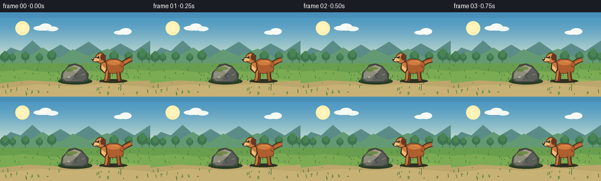
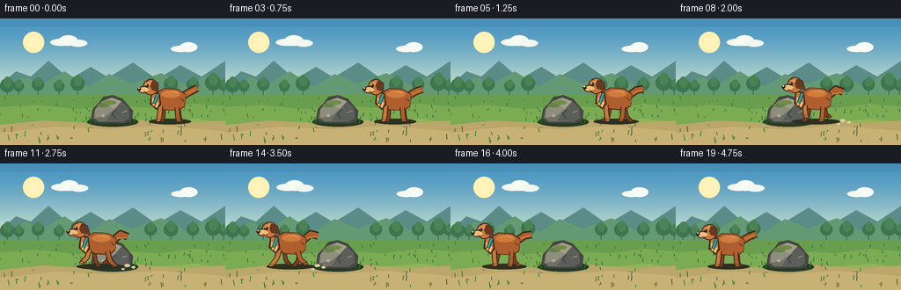
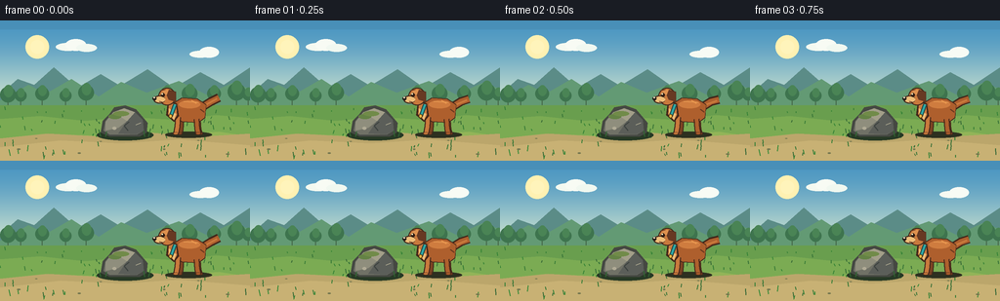
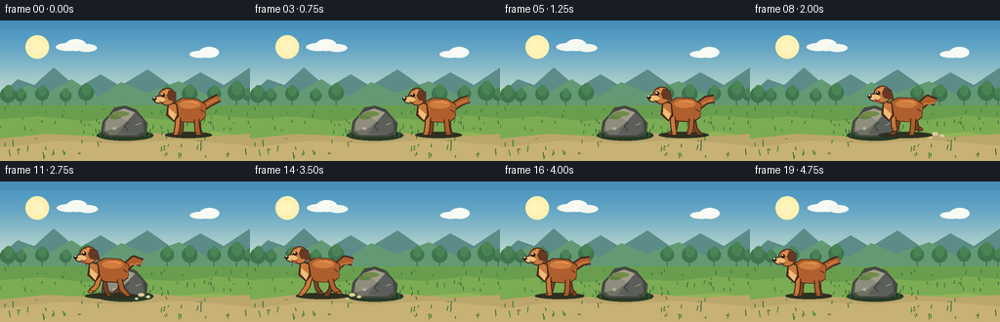

CODING AGENTS AS PIXEL WORLD MODELS
traex/GPT-5.6-Sol · dynamic_spatial_relationship_0004
点击播放 · 原生 RGB 像素
逐轮保存的候选
回放视频、检查图与代码变化。
每份候选均可单独播放。实际图片检查记录在下方工具轨迹中。
候选 01播放与检查图
点击播放 · 原生 RGB 像素


展开代码变化
--- 上一保存版本
+++ 本次保存版本
@@ -0,0 +1,306 @@
+"""Generate a deterministic 20-frame RGB animation for this case.
+
+The scene is rendered at 3x resolution and downsampled for clean, illustrated
+edges. The dog has a short establishing hold, runs in front of the fixed rock,
+and finishes with a second hold completely to the rock's left.
+"""
+
+from pathlib import Path
+import math
+
+import numpy as np
+from PIL import Image, ImageDraw
+
+import artifact_io
+
+
+W, H, N = 256, 144, 20
+S = 3
+
+
+def sc(v):
+ return int(round(v * S))
+
+
+class Painter:
+ def __init__(self, image):
+ self.d = ImageDraw.Draw(image, "RGBA")
+
+ @staticmethod
+ def _box(box):
+ return tuple(sc(v) for v in box)
+
+ @staticmethod
+ def _pts(points):
+ return [(sc(x), sc(y)) for x, y in points]
+
+ def polygon(self, points, fill):
+ self.d.polygon(self._pts(points), fill=fill)
+
+ def ellipse(self, box, fill, outline=None, width=1):
+ self.d.ellipse(self._box(box), fill=fill, outline=outline, width=sc(width))
+
+ def line(self, points, fill, width=1, joint="curve"):
+ self.d.line(self._pts(points), fill=fill, width=sc(width), joint=joint)
+
+ def rounded_rectangle(self, box, radius, fill, outline=None, width=1):
+ self.d.rounded_rectangle(
+ self._box(box), radius=sc(radius), fill=fill,
+ outline=outline, width=sc(width)
+ )
+
+
+def gradient_image():
+ """Soft blue-to-warm-horizon sky."""
+ hh, ww = H * S, W * S
+ top = np.array([76, 151, 194], dtype=float)
+ bottom = np.array([218, 234, 208], dtype=float)
+ arr = np.empty((hh, ww, 3), dtype=np.uint8)
+ for y in range(hh):
+ t = y / max(1, sc(105))
+ t = min(1.0, t)
+ # Smooth vertical blend.
+ t = t * t * (3 - 2 * t)
+ arr[y, :, :] = np.clip(top * (1 - t) + bottom * t, 0, 255)
+ return Image.fromarray(arr, "RGB").convert("RGBA")
+
+
+def draw_background(p, frame):
+ # Sun glow and quiet clouds, placed away from the main action.
+ p.ellipse((26, 15, 50, 39), (255, 241, 178, 34))
+ p.ellipse((31, 20, 45, 34), (255, 244, 187, 105))
+
+ drift = frame * 0.08
+ p.ellipse((57 + drift, 23, 82 + drift, 31), (244, 249, 240, 135))
+ p.ellipse((67 + drift, 19, 88 + drift, 31), (248, 251, 244, 155))
+ p.ellipse((78 + drift, 24, 99 + drift, 32), (241, 248, 240, 120))
+ p.ellipse((194 + drift * .5, 31, 216 + drift * .5, 38), (248, 250, 242, 108))
+ p.ellipse((204 + drift * .5, 27, 224 + drift * .5, 38), (248, 251, 245, 125))
+
+ # Layered hills give depth and keep silhouettes readable.
+ p.polygon([
+ (0, 76), (18, 60), (35, 66), (55, 48), (79, 69), (103, 55),
+ (123, 67), (151, 50), (178, 69), (205, 53), (229, 66), (256, 48),
+ (256, 104), (0, 104)
+ ], (91, 140, 135, 255))
+ p.polygon([
+ (0, 82), (29, 66), (47, 75), (73, 60), (101, 78), (124, 63),
+ (150, 74), (183, 62), (211, 76), (238, 64), (256, 70),
+ (256, 106), (0, 106)
+ ], (99, 154, 116, 255))
+
+ # Sparse distant trees.
+ for x, y, r in [(8,76,8),(21,77,6),(43,75,7),(67,77,6),(88,74,8),
+ (171,75,7),(194,75,8),(219,75,7),(242,73,9),(254,76,6)]:
+ p.line([(x, y - 2), (x, 91)], (68, 103, 72, 180), 1)
+ p.ellipse((x-r, y-r, x+r, y+r), (62, 116, 78, 180))
+ p.ellipse((x-r*.55, y-r*1.25, x+r*.65, y+r*.35), (74, 132, 85, 190))
+
+ # Meadow and foreground trail.
+ p.polygon([(0, 87), (256, 87), (256, 144), (0, 144)], (105, 158, 78, 255))
+ p.polygon([(0, 101), (41, 98), (87, 103), (131, 99), (181, 102),
+ (221, 97), (256, 100), (256, 144), (0, 144)], (123, 171, 83, 255))
+ p.polygon([(0, 121), (47, 116), (91, 118), (134, 114), (181, 117),
+ (224, 114), (256, 119), (256, 144), (0, 144)], (146, 180, 88, 255))
+ p.polygon([(0, 121), (49, 116), (102, 119), (153, 115), (208, 119),
+ (256, 116), (256, 144), (0, 144)], (187, 166, 107, 255))
+ p.polygon([(0, 130), (62, 123), (123, 126), (183, 122), (256, 128),
+ (256, 144), (0, 144)], (200, 177, 116, 255))
+
+ # Fixed fine vegetation: enough texture without temporal noise.
+ rng = np.random.default_rng(8417)
+ for _ in range(90):
+ x = float(rng.uniform(0, 256))
+ y = float(rng.uniform(91, 142))
+ length = float(rng.uniform(1.2, 4.8) * (0.7 + (y-91)/75))
+ color = (55, int(rng.integers(105, 142)), 55, int(rng.integers(95, 180)))
+ p.line([(x, y), (x + rng.uniform(-1.2, 1.2), y-length)], color, 1)
+ # Pebbles on the path.
+ for x, y, rx in [(19,132,2),(37,121,1.4),(81,136,1.7),(103,124,1.2),
+ (168,132,1.5),(203,123,1.2),(233,137,2.1)]:
+ p.ellipse((x-rx, y-rx*.35, x+rx, y+rx*.35), (116, 119, 79, 100))
+
+
+def draw_rock(p):
+ """The central, stationary landmark."""
+ # Contact shadow.
+ p.ellipse((99, 112, 157, 123), (39, 57, 37, 90))
+ # Dark rim then irregular main planes.
+ silhouette = [(103,115),(105,103),(112,96),(117,89),(128,87),(139,91),
+ (145,98),(151,105),(150,115),(143,119),(112,119)]
+ p.polygon(silhouette, (69, 72, 66, 255))
+ p.polygon([(106,113),(108,103),(116,94),(127,90),(138,94),(146,102),
+ (147,113),(140,117),(112,117)], (112, 113, 102, 255))
+ p.polygon([(108,104),(116,94),(127,90),(130,103),(121,110),(108,113)],
+ (143, 142, 125, 255))
+ p.polygon([(130,103),(138,94),(146,102),(147,113),(139,117),(121,116)],
+ (91, 94, 89, 255))
+ p.polygon([(116,94),(127,90),(138,94),(130,103)], (163, 159, 137, 220))
+ # Moss and stone markings.
+ p.ellipse((111,96,124,101), (100, 130, 69, 200))
+ p.ellipse((116,93,132,98), (113, 139, 73, 180))
+ p.line([(132,104),(127,108),(131,113)], (61, 67, 64, 180), 1)
+ p.line([(144,105),(139,107)], (177, 171, 146, 100), 1)
+ p.ellipse((115,109,119,112), (176, 171, 150, 90))
+ # Foreground grass overlaps the foot naturally.
+ for x, lean, h in [(103,-2,7),(108,1,5),(148,-1,6),(152,2,8)]:
+ p.line([(x,119),(x+lean,119-h)], (48, 105, 50, 230), 1)
+
+
+def draw_dust(p, x, frame, run_amt):
+ if run_amt < .45 or frame < 6 or frame > 15:
+ return
+ # Dog moves left, so a subtle dust wake trails to its right.
+ age = (frame % 3) * 1.3
+ for j, (dx, dy, r) in enumerate([(28,1,3.2),(35,3,2.2),(23,5,1.6)]):
+ alpha = int((95 - j*18) * run_amt)
+ p.ellipse((x+dx+age-r, 115+dy-r*.55, x+dx+age+r, 115+dy+r*.55),
+ (224, 204, 157, alpha))
+
+
+def draw_leg(p, anchor_x, top_y, swing, lift, color, outline, near=True):
+ """A compact two-segment running leg with a readable paw."""
+ knee_x = anchor_x + swing * .32
+ knee_y = top_y + 10 - lift * .25
+ paw_x = anchor_x + swing
+ paw_y = 116 - lift
+ width = 4 if near else 3
+ p.line([(anchor_x, top_y), (knee_x, knee_y), (paw_x, paw_y)], outline, width+2)
+ p.line([(anchor_x, top_y), (knee_x, knee_y), (paw_x, paw_y)], color, width)
+ p.ellipse((paw_x-3.2, paw_y-1.4, paw_x+2.6, paw_y+1.5), outline)
+ p.ellipse((paw_x-2.2, paw_y-1.0, paw_x+2.0, paw_y+.7), color)
+
+
+def draw_dog(p, x, frame, run_amt):
+ """Draw a left-facing, warm-brown dog with an animated gallop."""
+ if run_amt > 0.01:
+ phase = (frame - 4) * 1.68
+ bob = -1.6 * abs(math.sin(phase)) * run_amt
+ lean = 1.7 * run_amt
+ else:
+ phase = 0.0
+ bob = 0.0
+ lean = 0.0
+ cy = 95 + bob
+ ground = 117
+
+ # Soft grounding shadow stretches during the run.
+ shadow_w = 48 + 7 * run_amt
+ p.ellipse((x-shadow_w/2, ground-3, x+shadow_w/2, ground+3.2),
+ (45, 48, 32, 78))
+
+ outline = (66, 39, 26, 255)
+ far = (126, 67, 35, 255)
+ main = (174, 95, 45, 255)
+ warm = (201, 121, 61, 255)
+ light = (238, 190, 121, 255)
+
+ # Leg gait. Opposing pairs are deliberately distinct at this tiny scale.
+ amp = 9.0 * run_amt
+ s1 = math.sin(phase)
+ s2 = math.sin(phase + math.pi)
+ lift1 = max(0.0, math.cos(phase)) * 5 * run_amt
+ lift2 = max(0.0, math.cos(phase + math.pi)) * 5 * run_amt
+ if run_amt < .08:
+ amp = 0
+ s1 = s2 = 0
+ lift1 = lift2 = 0
+
+ # Far legs first.
+ draw_leg(p, x-7, cy+7, amp*s2-2, lift2, far, outline, False)
+ draw_leg(p, x+10, cy+7, amp*s1+2, lift1, far, outline, False)
+
+ # Tail arcs behind the body. At speed it streams backward (to the right).
+ tail_wave = math.sin(frame*.8) * (1-run_amt) * 2
+ tail_pts = [(x+15, cy-7), (x+23, cy-12-run_amt*2),
+ (x+31, cy-16+tail_wave+run_amt*5)]
+ p.line(tail_pts, outline, 9)
+ p.line(tail_pts, main, 6)
+ p.line([(x+18,cy-9),(x+29,cy-15+tail_wave+run_amt*5)], warm, 2)
+
+ # Torso, brisket, and warm dorsal highlight.
+ body_poly = [
+ (x-15-lean,cy-11),(x-7,cy-16),(x+9,cy-15),(x+18,cy-9),
+ (x+17,cy+5),(x+10,cy+10),(x-7,cy+9),(x-17-lean,cy+3)
+ ]
+ p.polygon(body_poly, outline)
+ inner = [(a + (0.8 if a < x else -0.5), b + (0.8 if b < cy else -0.8))
+ for a, b in body_poly]
+ p.polygon(inner, main)
+ p.ellipse((x-10,cy-13,x+12,cy-5), (207, 124, 63, 180))
+ p.line([(x-5,cy-12),(x+10,cy-11)], (231, 155, 85, 130), 1)
+
+ # Near legs over the body edge.
+ draw_leg(p, x-11-lean, cy+4, amp*s1-2, lift1, warm, outline, True)
+ draw_leg(p, x+8, cy+6, amp*s2+2, lift2, main, outline, True)
+
+ # Neck/chest points toward the left; cream chest improves articulation.
+ p.polygon([(x-12-lean,cy-10),(x-21-lean,cy-13),(x-23-lean,cy+2),
+ (x-15-lean,cy+9),(x-10-lean,cy+3)], outline)
+ p.polygon([(x-13-lean,cy-9),(x-20-lean,cy-11),(x-21-lean,cy+1),
+ (x-15-lean,cy+7),(x-12-lean,cy+2)], warm)
+ p.polygon([(x-20-lean,cy-5),(x-20-lean,cy+1),(x-15-lean,cy+7),
+ (x-13-lean,cy+1)], light)
+
+ # Head and snout establish unmistakable left-facing orientation.
+ hx, hy = x-21-lean, cy-17-run_amt*1.5
+ p.ellipse((hx-10,hy-9,hx+8,hy+9), outline)
+ p.ellipse((hx-9,hy-8,hx+7,hy+8), warm)
+ # Crown highlight.
+ p.ellipse((hx-6,hy-7,hx+3,hy-2), (222, 145, 79, 200))
+ # Floppy swept ear.
+ ear = [(hx+1,hy-7),(hx+8,hy-5),(hx+8+run_amt*3,hy+5),
+ (hx+1,hy+3),(hx-1,hy-2)]
+ p.polygon(ear, outline)
+ p.polygon([(a-.4,b+.5) for a,b in ear], (103, 57, 35, 255))
+ # Cream muzzle projects left.
+ p.ellipse((hx-15,hy-1,hx-3,hy+7), outline)
+ p.ellipse((hx-14,hy,hx-3,hy+6), light)
+ p.ellipse((hx-16,hy,hx-12,hy+4), (40, 31, 25, 255))
+ p.ellipse((hx-15.1,hy+.2,hx-13.3,hy+1.6), (235, 226, 195, 180))
+ # Bright, readable eye and brow.
+ p.ellipse((hx-7.2,hy-3.8,hx-3.2,hy+.2), (49, 30, 21, 255))
+ p.ellipse((hx-6.5,hy-3.3,hx-5.2,hy-2.0), (255, 242, 194, 255))
+ p.line([(hx-8,hy-6),(hx-3,hy-7)], (114, 57, 30, 180), 1)
+ # Small smile/pant detail during exertion.
+ p.line([(hx-9,hy+5),(hx-5,hy+6)], (77, 42, 29, 220), 1)
+ if run_amt > .65:
+ p.ellipse((hx-7,hy+5.5,hx-3.5,hy+8.5), (180, 68, 69, 230))
+
+ # A few short fur accents that follow the body.
+ p.line([(x+3,cy-13),(x+8,cy-10)], (236, 153, 79, 125), 1)
+ p.line([(x+12,cy-4),(x+16,cy-1)], (104, 53, 31, 100), 1)
+
+
+def render_frame(i):
+ img = gradient_image()
+ p = Painter(img)
+ draw_background(p, i)
+ draw_rock(p)
+
+ # Hand-shaped ease gives clear right/left establishing holds and a brisk
+ # crossing. The dog's full silhouette does not touch the rock at either end.
+ xs = [193,193,193,193,192,188,181,171,159,145,
+ 130,114,99,85,74,66,61,60,60,60]
+ run = [0,0,0,0,.18,.48,.78,1,1,1,1,1,1,1,.92,.72,.40,.08,0,0]
+ draw_dust(p, xs[i], i, run[i])
+ draw_dog(p, xs[i], i, run[i])
+
+ # Cinematic top vignette and soft edge shading (subtle, keeps RGB clean).
+ overlay = Image.new("RGBA", img.size, (0,0,0,0))
+ od = ImageDraw.Draw(overlay, "RGBA")
+ od.rectangle((0,0,W*S,sc(9)), fill=(22,43,51,18))
+ # Downsample from the oversized render.
+ img = Image.alpha_composite(img, overlay).convert("RGB")
+ return np.asarray(img.resize((W,H), Image.Resampling.LANCZOS), dtype=np.uint8)
+
+
+def main():
+ frames = np.stack([render_frame(i) for i in range(N)], axis=0)
+ assert frames.shape == (20, 144, 256, 3)
+ assert frames.dtype == np.uint8
+ artifact_io.save(frames, Path(__file__).resolve().parent)
+
+
+if __name__ == "__main__":
+ main()
候选 02播放与检查图
点击播放 · 原生 RGB 像素


展开代码变化
--- 上一保存版本
+++ 本次保存版本
@@ -267,6 +267,12 @@
if run_amt > .65:
p.ellipse((hx-7,hy+5.5,hx-3.5,hy+8.5), (180, 68, 69, 230))
+ # Turquoise collar and tiny brass tag emphasize that this is a domestic dog.
+ p.line([(x-14-lean,cy-9),(x-18-lean,cy+2)], (37, 73, 70, 255), 4)
+ p.line([(x-14-lean,cy-9),(x-18-lean,cy+2)], (42, 171, 169, 255), 2)
+ p.ellipse((x-20.5-lean,cy+1,x-16.5-lean,cy+5), (90, 60, 25, 255))
+ p.ellipse((x-19.8-lean,cy+1.5,x-17.2-lean,cy+4.2), (238, 187, 65, 255))
+
# A few short fur accents that follow the body.
p.line([(x+3,cy-13),(x+8,cy-10)], (236, 153, 79, 125), 1)
p.line([(x+12,cy-4),(x+16,cy-1)], (104, 53, 31, 100), 1)
可观测工具轨迹
实际执行的命令与返回图片。
命令 1exit 0
/bin/bash -lc "cat prompt.txt && printf '\\n--- GENERATION_RULES ---\\n' && cat GENERATION_RULES.md && printf '\\n--- TASK_SPEC ---\\n' && cat task_spec.json"
命令 2exit 1
/bin/bash -lc "find . -maxdepth 2 -type f -printf '%p\\n' | sort && printf '\\n--- TOOLS ---\\n' && command -v ffmpeg && command -v python3 && python3 - <<'PY'
try:
import cv2; print('cv2', cv2.__version__)
except Exception as e: print('no cv2',e)
try:
from PIL import Image; print('PIL ok')
except Exception as e: print('no PIL',e)
PY"命令 3exit 0
/bin/bash -lc 'cat artifact_io.py'
命令 4exit 0
/bin/bash -lc "set +e; command -v ffmpeg; command -v python3; python3 - <<'PY' mods=['numpy','PIL','cv2','imageio'] for m in mods: try: x=__import__(m); print(m, getattr(x,'__version__','ok')) except Exception as e: print(m,'ERR',e) PY"
命令 5exit 0
/bin/bash -lc "python3 generate.py && ls -lh pixels.npz inspection.png transition_check.png index.html && python3 - <<'PY'
import numpy as np
z=np.load('pixels.npz')['pixels']
print('packed',z.shape,z.dtype,'unique first',len(np.unique(z[:,:,0])))
# regenerate direct for checks
import generate
f=np.stack([generate.render_frame(i) for i in range(20)])
print('frames',f.shape,f.dtype,'range',f.min(),f.max())
print('MAD consecutive:', np.round(np.abs(np.diff(f.astype(float),axis=0)).mean((1,2,3)),2).tolist())
PY"命令 6exit 0
/bin/bash -lc "python3 generate.py && python3 - <<'PY'
from pathlib import Path
import numpy as np
from PIL import Image
z=np.load('pixels.npz')['pixels']
assert z.shape==(144,256,20) and z.dtype==np.uint32
fs=sorted(Path('frames').glob('*.png'))
assert len(fs)==20
for f in fs:
im=Image.open(f)
assert im.mode=='RGB' and im.size==(256,144)
print('validated:',len(fs),'RGB frames; packed tensor',z.shape,z.dtype)
print('outputs:', ', '.join(str(p) for p in ['pixels.npz','index.html','inspection.png']))
PY"视觉工具实际返回图片 1

保存候选 2 份；完成命令 6 次；可验证图片返回 1 张。原始 API 响应与完整日志保留在本地。